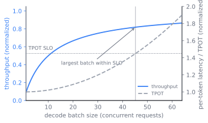

flowchart LR
req["Request arrives"] --> pf
subgraph pf["Prefill (one pass)"]
pfa["All prompt tokens together"]
pfb["Matrix-matrix multiply"]
pfc["Compute-bound"]
pfa --> pfb --> pfc
end
pf -->|"sets TTFT"| dec
subgraph dec["Decode (one token per step)"]
deca["Newest token only"]
decb["Matrix-vector multiply"]
decc["Memory-bandwidth-bound"]
deca --> decb --> decc
end
dec -->|"loop until stop, sets TPOT"| dec
dec --> done["Answer streamed"]
16 The Serving Problem
A trained model is a file; a served model is a system with a clock and a budget. By the end of this chapter a reader can explain why inference splits into a prefill phase and a decode phase with opposite hardware appetites, why latency and throughput pull against each other, why the real objective is goodput rather than either one alone, and why the key-value cache is the scarce resource that the whole serving layer exists to schedule.
That last point is the spine of this chapter. Everything else, the two phases, the latency metrics, the entire history of serving engines, and every operator knob, turns out to be a fight over one block of accelerator memory. We follow that thread from where the tension is born, through the objective that prices it, to the resource that bounds it, and finally through the engines and knobs that have learned to live inside the bound.
16.1 A file that has to keep time
Pre-training spends compute once to make a weights file. Serving spends compute forever, every time a user sends a request, and it spends it under a clock the user can feel. The problem is no longer minimizing a loss. It is running a fixed set of weights against a stream of requests so that each request returns fast enough and the cluster stays full enough to pay for itself.
Two latencies define “fast enough,” and they are not the same number. Time to first token (TTFT) is how long a user waits before the first piece of the answer appears. Time per output token (TPOT), sometimes called inter-token latency, is how long each subsequent token takes once the stream has started. A chat interface needs a short TTFT so the response feels prompt; a long generation needs a short TPOT so the text does not stutter. These two clocks are not arbitrary product targets. They fall out of the way a single forward pass divides into two phases with opposite hardware appetites.
16.2 Two phases, two appetites
When a request arrives, the model first reads the entire prompt. This is the prefill phase: all prompt tokens are processed together in one pass, every position attending to every earlier position, which is a sequence of large matrix-matrix multiplications. Prefill is compute-bound. It saturates the accelerator’s arithmetic units, and its cost grows with prompt length. TTFT is essentially the time prefill takes.
Then the model emits the answer one token at a time. This is the decode phase: each step feeds the single most recent token through the network to produce the next one, a sequence of thin matrix-vector multiplications. Decode is memory-bandwidth-bound, not compute-bound. The arithmetic per step is tiny, but every step must stream the full weight matrices and the growing cache of past keys and values out of memory, and that streaming, not the math, dominates the time. This roofline split, prefill living against the compute ceiling and decode against the bandwidth ceiling, is the organizing fact of inference performance (Yuan et al. 2024; Pope et al. 2022). TPOT is essentially the per-step decode latency, and an idle decode step leaves most of the accelerator’s compute unused.
Figure fig-serving-problem-phases traces one request through both phases and lines up, for each, the shape of its arithmetic, the resource it saturates, and the latency metric it sets.
A reader may wonder why this split matters so much. It matters because the two phases want opposite things from the hardware, and they run on the same hardware. Prefill wants to be fed enough work to keep the arithmetic units busy. Decode wants more requests batched together so that one expensive weight-streaming pass produces tokens for many users at once. Batching is the lever that turns a bandwidth-bound decode into a compute-efficient one, because the weights are read once and amortized across every request in the batch (Pope et al. 2022). So throughput, tokens per second across all users, rises with batch size, while the latency any single user sees can degrade as the batch fills. The serving problem is this tension, made concrete: every later section is an attempt to win throughput from batching without spending a single user’s latency budget.
16.3 The lie of a single number
It is tempting to chase one headline metric, and both obvious candidates lie. Throughput counts every token the cluster produces. Latency counts how long one user waits. Neither is the business objective. A server can post enormous throughput by batching so aggressively that every individual request misses its deadline, and it can post tiny latency by running one request at a time on idle hardware. The objective that survives contact with reality is goodput: the rate of requests completed within their latency targets. Tokens produced after a request has already blown its TTFT or TPOT budget are not useful work. Goodput is throughput counted only over requests that met their service-level objectives (SLOs).
Goodput reframes every later decision. The scheduler’s job is to pack as many requests as possible onto the accelerators without pushing any of them past their SLO. That is a packing problem with a hard constraint, and the constraint is set by memory. To see why, we have to ask what decode is forced to keep around.
16.4 The cache is the constraint
Attention at step \(t\) needs the keys and values of all earlier positions, so rather than recompute them each step, the server caches them. This is the KV cache. Its size is fixed by the architecture, not by the serving layer:
\[ \text{KV bytes} = 2 \cdot L \cdot n_{\text{kv}} \cdot d_{\text{head}} \cdot b_{\text{dtype}} \cdot T \]
where \(L\) is the number of layers, \(n_{\text{kv}}\) the number of key-value heads, \(d_{\text{head}}\) the head dimension, \(b_{\text{dtype}}\) the bytes per element, and \(T\) the number of tokens cached. The factor of two is for keys and values. The cache grows linearly with sequence length and linearly with the number of concurrent requests, and it lives in the same scarce accelerator memory that holds the weights. A reader can now see the squeeze: the weights take a fixed slice of memory, and whatever is left over is divided among the KV caches of the requests currently in flight. The number of requests you can batch, and therefore your throughput and goodput ceiling, is set by how much KV cache memory remains and how efficiently you use it. Figure fig-serving-problem-memory shows the partition, and Figure fig-serving-problem-1 makes the linear growth and its consequence concrete: each request’s cache rises in a straight line with context length, and the leftover pool fixes how many such requests fit at once.

This is why the architecture chapter’s attention variants matter to a serving engineer. Multi-query and grouped-query attention shrink \(n_{\text{kv}}\), and multi-head latent attention compresses the cached state, each cutting the KV bytes per token directly. They were designed, in part, to relax exactly this serving constraint, and sec-structured-long-context returns to what happens when \(T\) grows into the hundreds of thousands.
TipConstraint arrow
The KV cache whose size sec-transformer-architecture fixes, through the layer count, the head geometry, and the choice of multi-query, grouped-query, or latent attention, is the exact resource this serving layer must schedule. Nothing here is free to redesign that cache; the architecture handed it down, and the scheduler lives within it. The arrow also runs the other way and closes a loop opened in sec-scaling-laws: the decode cost measured here, paid once per token for the lifetime of the model, is what justifies over-training a smaller model far past its compute-optimal point. A token is cheap to train and expensive to serve, so the serving layer’s economics reach back up the stack and reshape a decision that looked like pure pre-training.
16.5 Four fights over one resource
With the cache identified as the binding constraint, the history of serving engines reads as a sequence of fights to waste less of it. The serving stack got its present shape by removing one source of waste at a time, and each removal was a scheduling idea before it was a kernel.
Stop holding a finished request’s slot. The first systems served requests the way a web server serves HTTP: collect a batch, run it to completion, return the batch. This is request-level batching, and it wastes the accelerator badly, because a short generation in the batch finishes early and then idles while the longest generation runs on, holding its slot. Orca replaced request-level batching with iteration-level scheduling: the scheduler decides what to run at the granularity of a single decode step, so a finished request leaves the batch immediately and a newly arrived one can join without waiting for the rest (Yu et al. 2022). This idea, widely called continuous batching, is the foundation every modern engine builds on.
Stop reserving cache you will not use. Iteration-level scheduling exposed the next bottleneck, which was memory. Continuous batching can admit a request the instant a slot opens, but only if there is KV cache memory to hold it, and early engines allocated that memory in one contiguous block per request sized for the maximum possible length. Most requests are far shorter than the maximum, so most of that reserved memory sat empty, fragmenting the pool and capping the batch size far below what the hardware could run. PagedAttention and the vLLM engine borrowed virtual memory’s paging from operating systems: store the KV cache in fixed-size blocks that need not be contiguous, allocate blocks on demand as a sequence grows, and let a block table map logical positions to physical blocks (Kwon et al. 2023). Fragmentation collapses, the batch grows, and throughput rises by a reported two to four times at the same latency (Kwon et al. 2023). The mechanism of that paging, and how it enables prefix sharing across requests, is the subject of sec-memory-scheduling; here it is enough to see that the memory pressure named above forced the design.
Stop letting a prefill stall the decodes. The most recent turn confronts the prefill-decode tension head-on. Admitting a new request runs an expensive prefill that competes with the decodes already in flight: favor prefill and TTFT improves while running requests stutter; favor decode and TTFT climbs while ongoing streams stay smooth. Because a prefill is a large compute burst and a decode step is a small one, mixing them in a batch lets a prefill stall the decodes waiting behind it, spiking their TPOT. Two families of answer emerged. Sarathi-Serve keeps the phases on the same hardware but splits each prefill into chunks and interleaves them with ongoing decodes, so no decode is stalled by a long prompt (Agrawal et al. 2024). DistServe goes the other way and disaggregates the phases onto separate pools of accelerators, so prefill interference cannot touch decode latency at all, at the cost of shipping the KV cache between pools (Zhong et al. 2024). Both are explicitly optimizing goodput rather than raw throughput, which is why chunked prefill and disaggregation are the two principled ways to stop having to choose between TTFT and TPOT.
ImportantWhat’s contested
Whether to disaggregate prefill and decode onto separate hardware or to keep them together and interleave is genuinely unsettled. Disaggregation (DistServe) eliminates prefill-decode interference and lets each phase scale and parallelize independently, which wins when the time-per-output-token target is tight and the time-to-first-token target is loose (Zhong et al. 2024). Aggregation with chunked prefill (Sarathi-Serve) keeps the KV cache local and avoids the cost of transferring it between pools, which wins under the opposite SLO balance and at lower request rates (Agrawal et al. 2024). Recent work argues the choice is not binary and that a scheduler should switch between or unify the two modes as load and SLOs shift. The right default depends on the model size, the interconnect bandwidth between pools, the request mix, and which SLO is the binding one, so treat disaggregation as a load-and-SLO-dependent choice rather than a settled winner.
16.6 Where the remaining knobs trade
The two prefill-decode answers above resolve one of serving’s trade-offs. Three more remain, and each one trades latency, throughput, or memory against another, with the KV pool sitting underneath all of them.
Batch size: throughput versus latency. A larger decode batch amortizes the weight-streaming cost across more requests and raises throughput, but it consumes more KV cache memory and lengthens each step, raising TPOT. The right batch is the largest one that still meets the TPOT SLO, and it moves as request lengths change. Figure fig-serving-problem-2 draws the two curves against batch size: throughput climbs with diminishing returns toward a bandwidth-bound ceiling while TPOT rises, and the chosen batch sits at the point where TPOT meets its budget.

Figure 16.4: Schematic of the decode batch-size trade-off: throughput rises with diminishing returns toward a memory-bandwidth ceiling while per-token latency (TPOT) climbs, so the best batch is the largest one still under the TPOT SLO. Idealized values, after Pope et al. (2022). KV cache memory versus admitted requests. Memory spent on weights cannot hold KV cache, and memory spent caching a long-context request cannot admit a new one. When the pool fills, an engine must either reject or queue new requests, or evict and later recompute the cache of a paused one, trading memory pressure for recompute cost.
Latency floor versus utilization. Holding accelerators idle in reserve protects TTFT against bursts but wastes the very compute serving exists to monetize. Goodput is the function that prices this trade, because it counts utilization only when it produces in-SLO completions.
16.7 The loop, and what it reports
A serving engine is, at its core, a loop that on each iteration chooses a set of requests to run, runs one model step on them, and frees the resources of any that finished. The shape below is the continuous-batching loop that Orca introduced and every modern engine refines (Yu et al. 2022).
# One iteration of a continuous-batching scheduler (sketch).
while running or waiting:
# Admit new requests while KV-cache blocks are free and SLOs allow.
while waiting and kv_pool.can_allocate(waiting.peek()):
running.add(waiting.pop()) # its prefill joins this step
batch = scheduler.select(running) # may chunk prefills, cap by memory
outputs = model.step(batch) # one prefill/decode pass
for req in batch:
req.append(outputs[req])
if req.is_finished():
kv_pool.free(req.blocks) # return blocks to the pool
running.remove(req)The load-bearing decisions are not in the model step but in the two lines that admit requests and select the batch. kv_pool.can_allocate is where the memory constraint becomes a scheduling decision, and scheduler.select is where the latency-throughput trade is struck, by capping batch size for TPOT, by chunking prefills so they do not stall decodes, and by ordering against SLOs. The corresponding logic in a real engine lives in the engine step, for example vllm.LLMEngine.step, vllm/engine/llm_engine.py, with the block accounting in the cache manager.
The operational metrics that matter follow directly from the problem. TTFT and TPOT are measured per request and tracked as percentiles, not means, because a tail miss is an SLO miss. Goodput is the headline number, computed as in-SLO completions per second. KV cache utilization and the preemption rate, how often the engine has to pause and later restore a request because memory ran out, tell you whether the memory constraint or the compute constraint is currently binding. When preemptions climb, the cache is the bottleneck and the fixes are architectural and in sec-memory-scheduling; when the accelerators are full but latency is fine, throughput is the frontier and the fixes are in sec-faster-decoding and sec-quantization-kernels.
Through the lens this book carries: serving is where capability meets its price, because a model only delivers a behavior if it can be served inside a latency budget; efficiency is the entire game, since goodput per accelerator is what makes a capability affordable; and trust enters as the SLO itself, the promise that a request will return on time, which the scheduler must keep under load it did not choose.
16.8 Further reading
- Yu et al., “Orca: A Distributed Serving System for Transformer-Based Generative Models,” OSDI 2022. usenix.org
- Kwon et al., “Efficient Memory Management for Large Language Model Serving with PagedAttention” (vLLM), SOSP 2023. arXiv:2309.06180
- Agrawal et al., “Taming Throughput-Latency Tradeoff in LLM Inference with Sarathi-Serve,” OSDI 2024. arXiv:2403.02310
- Zhong et al., “DistServe: Disaggregating Prefill and Decoding for Goodput-optimized Large Language Model Serving,” OSDI 2024. arXiv:2401.09670
- Yuan et al., “LLM Inference Unveiled: Survey and Roofline Model Insights,” 2024. arXiv:2402.16363
- Pope et al., “Efficiently Scaling Transformer Inference,” 2022. arXiv:2211.05102
Agrawal, Amey, Nitin Kedia, Ashish Panwar, et al. 2024. “Taming Throughput-Latency Tradeoff in LLM Inference with Sarathi-Serve.” 18th USENIX Symposium on Operating Systems Design and Implementation (OSDI). https://arxiv.org/abs/2403.02310.
Kwon, Woosuk, Zhuohan Li, Siyuan Zhuang, et al. 2023. “Efficient Memory Management for Large Language Model Serving with PagedAttention.” Proceedings of the 29th Symposium on Operating Systems Principles (SOSP). https://arxiv.org/abs/2309.06180.
Pope, Reiner, Sholto Douglas, Aakanksha Chowdhery, et al. 2022. “Efficiently Scaling Transformer Inference.” arXiv Preprint arXiv:2211.05102. https://arxiv.org/abs/2211.05102.
Yu, Gyeong-In, Joo Seong Jeong, Geon-Woo Kim, Soojeong Kim, and Byung-Gon Chun. 2022. “Orca: A Distributed Serving System for Transformer-Based Generative Models.” 16th USENIX Symposium on Operating Systems Design and Implementation (OSDI). https://www.usenix.org/conference/osdi22/presentation/yu.
Yuan, Zhihang, Yuzhang Shang, Yang Zhou, et al. 2024. “LLM Inference Unveiled: Survey and Roofline Model Insights.” arXiv Preprint arXiv:2402.16363. https://arxiv.org/abs/2402.16363.
Zhong, Yinmin, Shengyu Liu, Junda Chen, et al. 2024. “DistServe: Disaggregating Prefill and Decoding for Goodput-Optimized Large Language Model Serving.” 18th USENIX Symposium on Operating Systems Design and Implementation (OSDI). https://arxiv.org/abs/2401.09670.